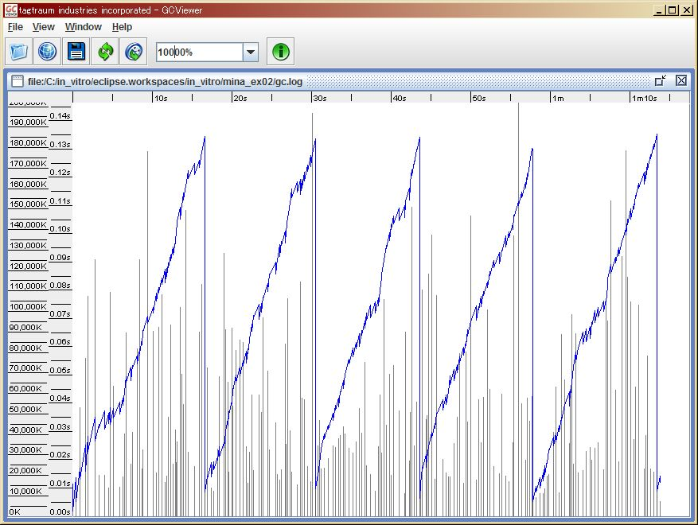
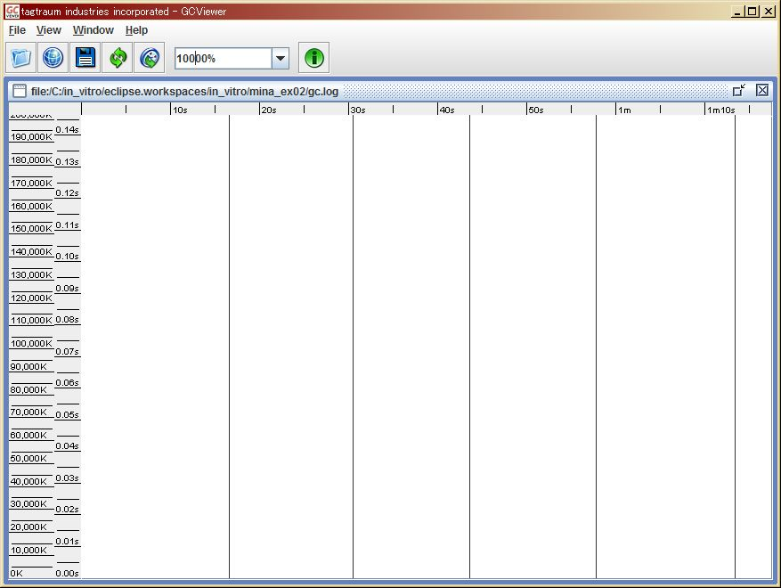
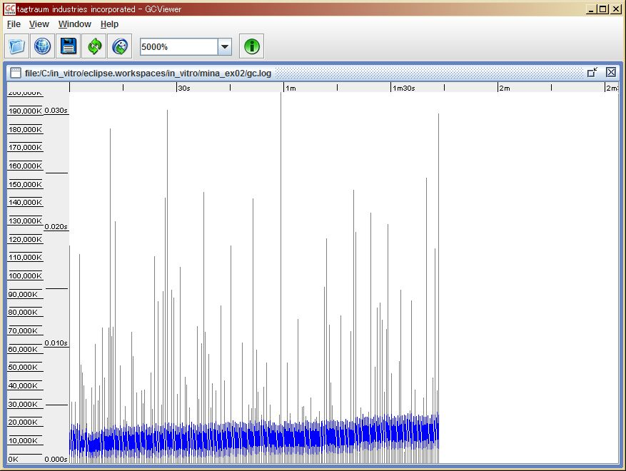

category: Java
"Echo" Server/Client Example using Apache MINA:
FEATURE:
- "act8" send/receive 1MB(larger size enable) payload repeatedly.
MAIN PURPOSE:
Check memory usage, heap overflow, and out-of-memory behaviours when building Apache MINA applications sending/receiving large size data.
EXAMPLE (EXTREM TRANSMISSION SITUATION):
Server-side GC log sample (10 client connection, 1MB packet, 100ms interval):
;
Blue-line : usage heap.
Gray-vertical-line: gc time.
Server-side java parameter:
-server -Xms200m -Xmx200m -Xloggc:gc.log
No overflow, no out-of-memory. But Full-GCs invoked about every 10 seconds:
;
Black-vertical-line: Full-GC
EXAMPLE 2 (NORMAL SITUATION):
But above case, all traffic packet per second are:
1MB x 10 (1000/100ms) x 10 client= 100MB/sec = 800Mbps(bits/sec)
This is extremely over traffic situation when using 100Mbps ethernet card.
Let's assume we are using 100Mbps ethernet card at next example, and avoid over traffic.
New client-side parameters are :
262,144 bytes, 200ms interval, 10 client -> 262,144 x 5 (1000/200ms) x 10 client = 13,107,200 Bytes/sec = 100M bits/sec (Actually, TCP/IP header sizes should be added, but ignored for convenience.) (Server-side parameter doesn't change)
;
Stable heap usage, gc invocation, NO Full-GC.
Testing Environment:
Windows XP SP3 Pentium4 2.8GHz (HT) 2GB RAM Java 1.6.12 Apache MINA 1.1.7